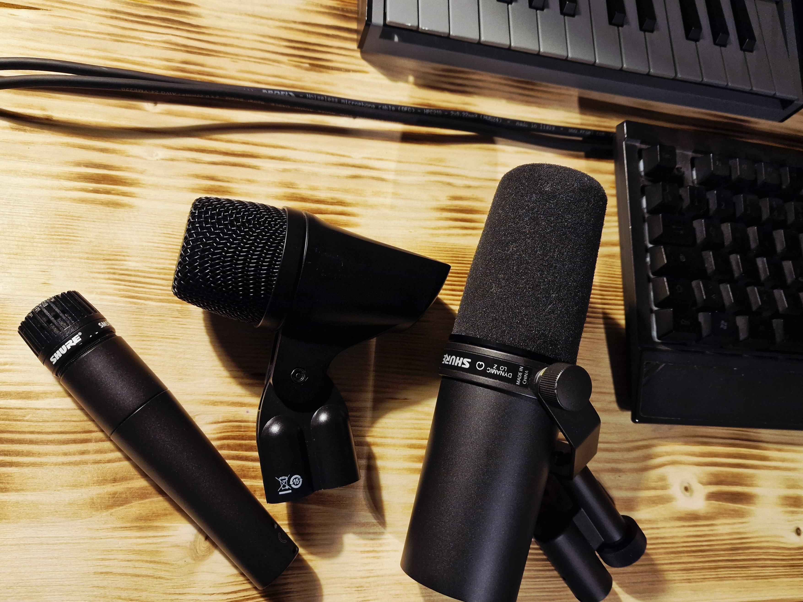

Microfoni Dinamici

I microfoni dinamici sfruttano il principio dell'induzione elettromagnetica tramite una bobina mobile. Questa struttura fisica li rende i veri "muli da soma" dello studio di registrazione e del palco, capaci di affrontare situazioni critiche dove altre tecnologie fallirebbero. Analizziamo nel dettaglio i loro punti di forza e i loro limiti fisiologici.
| Vantaggi | Info Tecniche |
|---|---|
|
Gestione SPL (Sound Pressure Level) |
Il microfono tollera pressioni acustiche elevatissime prima di raggiungere il proprio limite di escursione fisica. Questo previene la distorsione meccanica anche a diretto contatto con sorgenti estreme, come amplificatori saturati o grancasse. |
| Resistenza fisica estrema | Costruiti per durare, sopportano sbalzi termici, umidità e urti accidentali. |
| Isolamento acustico | Avendo una sensibilità minore, tendono a "rifiutare" i rumori di fondo e i rientri degli altri strumenti presenti nella stessa stanza, garantendo tracce più pulite. |
| Nessuna alimentazione | Essendo circuiti passivi, non richiedono l'attivazione della Phantom Power (+48V) dal mixer o dalla scheda audio. |
| Svantaggi | info |
|---|---|
| Risposta ai transienti lenta | La bobina di rame collegata al diaframma ha un peso meccanico significativo. Questo rallenta la reattività del microfono agli attacchi sonori molto veloci e percussivi rispetto a un condensatore. |
| Mancanza di "aria" | Il design fisico limita naturalmente la capacità di catturare le frequenze altissime (sopra i 15-16 kHz), risultando spesso carenti nel dettaglio fine. |
| Bassa sensibilità | Generano un segnale elettrico molto debole. Per portarlo a un volume di registrazione ottimale, richiedono preamplificatori potenti e di alta qualità per non introdurre fruscio (noise floor). |

Aneddoti e Informazioni Interessanti
Come accennato riguardo alla batteria, i microfoni dinamici vengono posizionati vicino alle pelli battenti proprio per la loro capacità di gestire pressioni sonore elevate. Inoltre, ogni modello ha una specifica risposta in frequenza che facilita tecnicamente il lavoro in fase di mixaggio. Senza perderci in troppi dettagli, analizziamo tre microfoni dinamici che utilizzo nel mio piccolo home studio, partendo da sinistra verso destra: lo Shure SM57, l'AKG P2 e lo Shure SM7B. Ognuno di essi ha il suo campo di lavoro ideale.
Lo Shure SM57 è il re indiscusso del rullante, ma è diventato celebre come il vero microfono "adatto a tutto". È protagonista nella maggior parte dei nostri brani preferiti e viene usato ovunque: dall'home recording ai palchi più grandi, sulle batterie come sulle chitarre elettriche. È utilizzatissimo perché è economico e costruito come un carro armato (la leggenda narra che, se cade in studio, c'è da preoccuparsi per le piastrelle del pavimento, non per il microfono).
Passiamo all'AKG P2. Questo microfono è progettato specificamente per le basse frequenze, come la grancassa e i cabinet per basso. Grazie a questa sua naturale enfatizzazione sulle basse, permette di intervenire molto meno con l'equalizzatore una volta registrata la traccia. Il rovescio della medaglia è che, proprio per questo suo focus, perde velocemente sensibilità sulle frequenze medie e alte.
Infine, lo Shure SM7B. Negli ultimi anni è diventato lo standard industriale per podcast e radio, grazie alla sua risposta in frequenza piatta che restituisce un tipico suono caldo e profondo. Inizialmente divenne celebre nel mondo della musica perché fu il microfono scelto dall'ingegnere del suono Bruce Swedien per registrare la voce di Michael Jackson.
Home